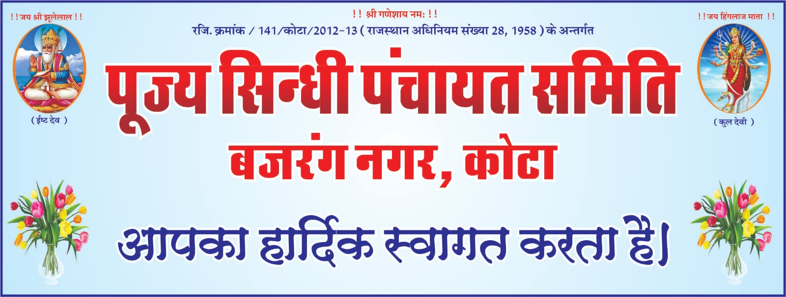

About us
विश्व की प्राचीनतम सभ्यता सिन्धु नदी घाटी के किनारे स्थित हड़प्पा और मोहन जोदड़ो के हम वारिसों के लिए यह फख की बात है कि पूर्णतया लोकतंत्र आधारित पंचायत प्रणाली का प्रारंभ करने का श्रेय हमें जाता है। सिन्धी समुदाय ने सैकड़ों-हजारों वर्ष पूर्व पंचायत प्रणाली के महत्व और लाभों को समझा और उसे आज तक बरक़रार रखा। इसी कड़ी में आज यह उल्लेखनीय है कि देश-प्रदेश में जहाँ भी सिन्धी है वहाँ उसने पंचायत नामक संस्था को जीवित रखा है। अपनी पहचान को सुदृढ़ करने, अपना राजनैतिक कद सुविचारित कर स्थापित करने और साथ ही सिन्धियत को बचा कर बढ़ा कर अपना एक नया वजूद दिखलाने की उत्कट इच्छा को लेकर चले प्रयास का ही परिणाम आज पूज्य सिन्धी पंचायत समिति, बजरंग नगर , कोटा है।
सिन्धु सागर भवन हमारा प्रयास, आपका सहयोग
आपको जानकारी देते हुए हर्ष की अनुभूति हो रही है कि संस्था द्वारा सिन्धी समाज कोटा के स्वप्न सिन्धु सागर भवन को पूर्ण कर समर्पित किया है। हमारे इन प्रयासों में समाज के समस्त भामाशाहो / दानदाताओं/समस्त सम्मानीय मुखीजन का प्रत्यक्ष रूप से सहयोग सत्कार एवं मार्गदर्शन प्राप्त होता रहा है जिसके लिये संस्था आप सभी का अभिवादन एवं स्वागत संस्था द्वारा दिनांक 27 दिसम्बर, 2020 को अध्यक्ष पद हेतु चुनाव सम्पन्न कराये जा रहे है। चुनाव पूर्ण निष्पक्षता एवं त्रिक प्रणाली से सम्पन्न होंगे। इसके लिये संस्था प्रतिबद्ध है।संस्था के अथक प्रयासों से वर्ष 2007 में सिंधु सागर भवन का सपना संजोए 5300 वर्गमीटर भूखण्ड सेक्टर-17. प्रताप नगर, सांगानेर जयपुर पर राजस्थान आवासन मण्डल जयपुर द्वारा संस्था के नाम से आवंटित हुआ तत्समय उक्त भूखण्ड की कुल जमा योग्य राशि करीब 1,55,00,000/- अक्षरे एक करोड़ पचपन लाख रूपये रही जिसका रियायती दरों पर कम करवाने के लिए अध्यक्ष महोदय एवं समस्त कार्यकारिणी द्वारा लगातार प्रयास किये गये जिसके परिणामस्वरूप क्त भूखण्ड़ की कीमत राज्य सरकार द्वारा तयशुदा प्रारम्भिक देय राशि को मात्र 30 प्रतिशत तक की राशि तय करवाकर रियायती दरों पर प्राप्त की गई। भूखण्ड़ का खरीद मूल्य, बाउण्ड्रीवॉल एवं पंजीयन शुल्क समस्त खर्च 2,00,000/- अक्षरे बियालीस लाख रूपये में करवाया गया। इस संपूर्ण कार्यवाही में करीब 6 वर्ष का समय लगा। इस हेतु राजनैतिक स्तर पर अहम लड़ाईयाँ लड़ी गई तथा परिणाम समाज के पक्ष में आया तथा उक्त आवंटित भूखण्ड बायती दरों पर समाज को प्राप्त हुआ जिसके उपरांत समाज के भामाशाहों, दानदाता एवं जयपुर की पूज्य पंचायतों के र्थिक सहयोग से उक्त रियायती दरों पर आवंटित भूखण्ड के विक्रय पत्र की रजिस्ट्री संस्था के नाम से वर्ष 2013 में हुई।
संस्था द्वारा वर्ष 2014 में उक्त भूखण्ड के भूमि पूजन का भव्य आयोजन सद्गुरू स्वामी भगत प्रकाश जी महाराज के कर मलों द्वारा किया गया जिसमें समाज के करीब 2000 लोगों की गौरवमयी उपस्थिति रही जिसके उपरांत उक्त भूखण्ड भूमि समतलीकरण एवं आवंटित भूखण्ड के चारों तरफ करीब 1400 फीट बाउण्ड्रीवाल का निर्माण जिसकी 11 ऊंचाई नींव निर्मित करवाई गई है, भूखण्ड के दक्षिणी-पश्चिमी हिस्से 55 फीट इन्टू 65 फीट एरिया में 10700 फीट तीन मंजिला निर्माण कार्य भव्यता के साथ पूर्ण हो चुका है जिसमें (बेसमेन्ट में एक हॉल, तीन कमरे, लेट-बाथ फ्लोर पर दो बड़े हॉल, दो लेट-बाथ निर्मित है और फर्स्ट फ्लोर पर पाँच कमरे, लेट-बाथ सहित निर्माण मता के साथ पूर्ण हो चुका हैं) तथा ग्राउण्ड फ्लोर पर निर्मित हॉल में सर्वश्वर भगवान झूलेलाल मंदिर में पाँच परमर मूर्तिया ( 7 फीट ऊंची) प्लेटफार्म सहित सिंधी विधान से स्थापित कर प्राण प्रतिष्ठा कराई गई हैं जिस मित रूप से वहाँ पर पूजा पाठ, आरती, सत्संग होता है व उपरोक्त निर्मित परिसर के अलावा भूखण्ड पर भव्य लॉन -अन्य सुविधाओं सहित विकसित किया गया हैं। भूखण्ड पर निर्मित समस्त परिसर एवं भव्य लॉन आदि सर्व समाज रियायती दरों पर उपलब्ध रहेगें।
संस्था द्वारा नवनिर्मित भवन के विकास संचालन एवं रख-रखाव का संपूर्ण कार्य सिन्धु सागर भवन विकास एवं संचा के द्वारा श्री ज्ञानदेव आहुजा की अध्यक्षता में किया जा रहा हैं तथा उक्त भूखण्ड पर निर्मित सिन्धु सागर भक जन प्रतिनिधि सांसद विधायक/सामाजिक भामाशाहो / दानदाताओं/पूज्य पंचायत के आर्थिक सहयोग एवम सहकार प्राप्त हुआ हैं। संस्थाको आयकर अधिनियमों के अनुसार दानदाताओं को आयकर छूट की सुविधा भी प्राप्त हैं।
हमारे सार्थक प्रयास
- रियायती दरों पर समाज के लिए 5300 वर्गमीटर भूखण्ड (सेक्टर-17) कुम्भा मार्ग, प्रताप नगर, सांगानेर जयपुर पर आवंटित करवाना।
- आवंटित भूखण्ड के चारों तरफ 1400 फीट लम्बी बाउण्ड्रीवॉल का निर्माण करवाया जाना जिसकी ऊँचाई 11 फीट हैं।
- भूखण्ड के दक्षिणी पश्चिमी हिस्से 55 फीट इन्टू 65 फीट एरिया में 10700 वर्गफीट तीन मंजिला निर्माण कार्य भव्यता के साथ सम्पन्न करवाना जिसमें बेसमेंन्ट में एक हॉल, तीन कमरे, लेट-बाथ का निर्माण समाज के भामाशाहों, दानदाताओं के आर्थिक सहयोग से कराया गया है।
- भूखण्ड के ग्राउण्ड फ्लोर पर दो बड़े हॉल, दो लेट-बाथ का निर्माण माननीय जयपुर शहर, सांसद महोदय श्रीरामचरण बोहरा के द्वारा स्वीकृत सांसद निधी 30,00,000/-अक्ष तीस लाख रुपये के सहयोग से पूर्ण कराया गया।
- भूखण्ड के फर्स्ट फ्लोर पर पाँच कमर, लेट-बाथ, सीढ़िया एवं बालकॉनी का निर्माण कार्य माननीय राज्य सभा सांसद महोदय श्री भूपेन्द्र यादव के द्वारा स्वीकृत सांसद निधी 20,00,000/- अक्षर बीस लाख रूपये के सहयोग से पूर्ण कराया गया।
- आवंटित भूखण्ड के चारों तरफ बाउण्ड्रीवॉल का पुर्नउदारीकरण एवं चार विशाल द्वारों का निर्माण कार्य माननीय विधायक महोदय श्री कैलाश वर्मा के द्वारा स्वीकृत विधायक निधी राशि 10,00,000/- अक्षरे दस लाख रूपये के सहयोग से पूर्ण कराया गया। मद संख्या 4, 5. एवं 6 का समस्त निर्माण कार्य माननीय जिलाधीश महोदय जयपुर के अधीनस्थ ग्रामीण विकास एवं पंचायत राज विभाग के मार्गदर्शन सम्पन्न हुआ है।
- ग्राउण्ड फ्लोर पर निर्मित हॉल में सर्वेश्वर भगवान श्री झूलेलाल मंदिर में पाँच संगमरमर की मूर्तिया ( 7 फीट 7.ऊंची ) प्लेटफार्म सहित की विधिवत प्राण प्रतिष्ठा समाज के भामाशाहों, दानदाताओं के आर्थिक सहयोग से पूर्ण कराई गई, जिसमें नियमित रूप से पूजा पाठ आरती एवं सत्संग होता हैं।
- आवंटित भूखण्ड के उत्तरी हिस्से में सिन्धु 3000 वर्गगज में विशाल सिन्धु सागर मैरिज गार्डन, सुसज्जित छः कमरे, वॅक्विट हॉल, सुसज्जित मंच, बुफे गैलेरी का निर्माण एवं विकास कार्य श्री मोहन लाल चंचलानी प्रोपराईटर महेश कॅटर्स के द्वारा करवाया गया है।
- सिन्धु सागर भवन में निर्मित परिसर में समाज को धार्मिक एवं सामाजिक कार्यक्रमों हेतु परिसर उपलब्ध हो सकेगा ।जिसमें सिंधी समाज के त्यौहारों, मेलों का आयोजन किया जा सकेगा।
- संस्था सामाजिक सरोकार को लेकर सदैव सक्रिय रही है।
- संस्था द्वारा समय-समय पर सांस्कृतिक, धार्मिक कार्यक्रमों का आयोजन किया जाता रहा हैं।
- संस्था सदैव सामाजिक हितों एवं एकता को लेकर प्रयासरत रही हैं।